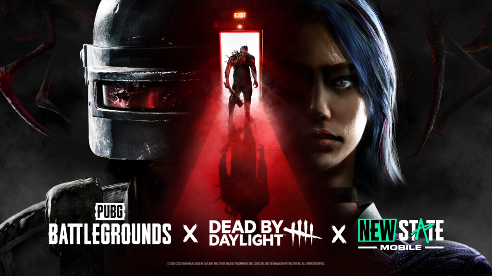

Dead by Daylight llega a PUBG: Battlegrounds y New State Mobile
KRAFTON y Behaviour Interactive se asocian en una colaboración de Dead by Daylight, llena de cosméticos aterradores y un terrorífico evento para sus principales juegos battle royale.
KRAFTON, Inc. anunció su asociación con Behaviour Interactive en una colaboración que traerá el horror de Dead by Daylight a PUBG: BATTLEGROUNDS y NEW STATE MOBILE en octubre. No es seguro viajar solo en esta temporada de Halloween, ya que los jugadores de ambos títulos podrán disfrazarse como algunos de los icónicos asesinos de Dead by Daylight, cazar a los Sobrevivientes con espeluznantes artículos cosméticos y participar en un evento aterrador exclusivo de PUBG: BATTLEGROUNDS.
A continuación te presentamos un resumen de la asociación de KRAFTON con Behaviour Interactive y Dead by Daylight:
PUBG: BATTLEGROUNDS x Dead by Daylight
- Vístete para la cacería: Del 19 de octubre al 7 de diciembre en PC, y del 20 de octubre al 8 de diciembre en consolas, la colaboración con Dead by Daylight ofrecerá a los jugadores de PUBG: BATTLEGROUNDS la oportunidad de adquirir recompensas cosméticas temáticas, incluyendo:
- Disfraces (x4 sets)
- Máscaras (x4)
- Backpack Skins (x3)
- Pan Skin
- Placa con nombre
- Los tres Sobrevivientes tendrán que usar su ingenio y habilidades para eludir al Asesino, utilizando elementos básicos de Dead by Daylight, como objetos que se arrojan. Los Sobrevivientes deben reparar generadores alrededor del mapa para encender las puertas de salida y escapar. Los jugadores pueden obtener recompensas completando las siguientes misiones del 21 de octubre al 7 de noviembre:
Los tres Sobrevivientes tendrán que usar su ingenio y habilidades para eludir al Asesino, utilizando elementos básicos de Dead by Daylight, como objetos que se arrojan. Los Sobrevivientes deben reparar generadores alrededor del mapa para encender las puertas de salida y escapar. Los jugadores pueden obtener recompensas completando las siguientes misiones del 21 de octubre al 7 de noviembre:
- Jugar el modo Dead by Daylight una vez y obtener un código de atuendo de superviviente solitario «Dwight Unknown», que se puede canjear en Dead by Daylight.
- Jugar el modo Dead by Daylight cinco veces para ganar un artículo de aerosol de Dead by Daylight.
- Acumular 10 kills como Asesino y recibir la máscara “La Enfermera” (personaje de Dead by Daylight).
NEW STATE MOBILE x Dead by Daylight
- Disfraces de Halloween: Durante la colaboración, los jugadores podrán obtener cosméticos exclusivos de Dead by Daylight para agregar un poco de horror a sus disfraces de Halloween este año. Los ítems del juego y las cajas de colaboración de Dead by Daylight estarán disponibles para todos los jugadores desde el 20 de octubre hasta el 23 de noviembre. Estén atentos para obtener más información sobre la colaboración Dead by Daylight en NEW STATE MOBILE.